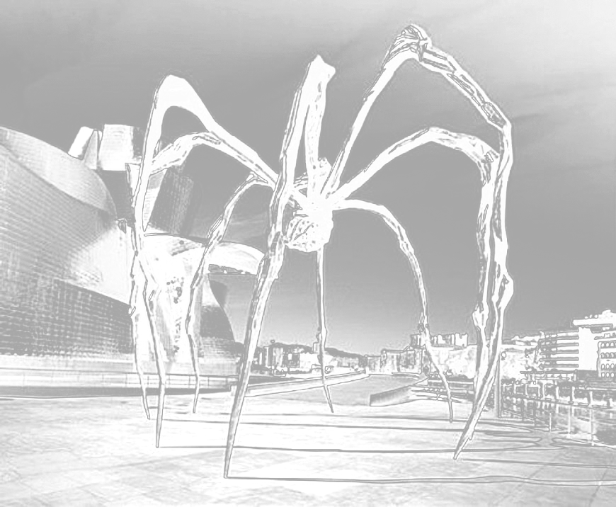

<!DOCTYPE html>
<html lang="en" >
<head>
  <meta charset="UTF-8">
  <meta name="viewport" content="width=device-width, initial-scale=1">
  <title>Thesis2021_Eunji_Lee</title>
  <link rel="stylesheet" href="./style.css">

</head>
<body>
<!-- partial:index.partial.html -->
<body>


      <div class="top" id="top" style="font-size:1.8em; line-height: 1em; position: fixed;">
            <div class="title" style="padding:0.5em;  margin-bottom: -1em; ">
                Melancholic Inspiration:&thinsp;Light in the midst of misery


                <div style="font-size: 0.6em; float: right; display: inline-flex;">
                  by Eunji Lee
                </div>
            </div>


                      <div class="button" style="display:inline-block;">
                        <button id="toc" type="button" onclick="myFunction(this)" class="collapsible" >
                          <div class="bar1"></div>
                          <div class="bar2"></div>
                          <div class="bar3"></div>
                        </button>

                        <div id="toc" class="content" style="margin-top:-0.2em;">
                            <li><a href="#abstract" id="Abstract">0.	Abstract</a></li>
                            <li><a href="#prologue" id="Prologue">1.	Prologue</a></li>
                            <li><a href="#ch2" id="Ch2">2.	What is Melancholia?</a>
                            <br><a href="#four" id="Four"><span style="margin-left: 50px;" >— The Four Humours</span></a>
                            <br><a href="#ari" id="Ari"><span style="margin-left: 50px;" >— From Aristotle to Freud</span></a>
                            <br><a href="#ari" id="New"><span style="margin-left: 50px;" >—	A Plea for New Perspective</span></a>
                            <br><a href="#ari" id="Louise"><span style="margin-left: 50px;" >— Create to heal: Louise Bourgeois</span></a>
                            <li><a href="#ari" id="Ch3">3.	Three People, Three Melancholia</a></li>
                            <li><a href="#ari" id="Epilogue">  4.	Epilogue</a></li>
                            <li><a href="#ari" id="References">5. References</a></li>
                        </div>
                      </div>


      </div>


      <div class="landing">

        <div class="center">
          <div id="big" style="padding-top:0.05em;" class="big">
            <span class="fill">M</span><span class="fill">e</span><span class="fill">l</span><span class="fill">a</span><span class="fill">n</span><span class="fill">c</span><span class="fill">h</span><span class="fill">o</span><span class="fill">l</span><span class="fill">i</span><span class="fill">c</span>
          </div>

          <div id="big" class="big">
            <span class="fill">I</span><span class="fill">n</span><span class="fill">s</span><span class="fill">p</span><span class="fill">i</span><span class="fill">r</span><span class="fill">a</span><span class="fill">t</span><span class="fill">i</span><span class="fill">o</span><span class="fill">n</span><span class="fill">:</span>
          </div>

          <div class="small">
          <span>Light in the midst of misery</span>
          </div>
        </div>

      </div>


            <div class="thesis">

              <a name="abstract"></a>
                  <div id="content-Abstract" class="abstract">
                    <span style="font-size:1.5em; ">0<span class="dot abstract">.</span> Abstract</span>
                    <p>
                      Everyday we wake up and live the day we have been given<span class="dot abstract">.</span> It is such a grateful thing that we are breathing and the heart is beating, but to some people, it may not be the case<span class="dot abstract">.</span> It has been more than 2 years now since I have noticed that something was different inside me<span class="dot abstract">.</span> I could not function properly in many ways and I was afraid because I was unfamiliar with my new-self<span class="dot abstract">.</span> Everyday was a burden living in the shadows and I thought it might be even better if I could just disappear<span class="dot abstract">.</span> I realized I should get consulted and now I know I am going through a mental disorder<span class="dot abstract">.</span> Even though it sounds a bit depressing but that is not the only side of it<span class="dot abstract">.</span> Because of the illness I was able to think more<span class="dot abstract">.</span> Thanks to the melancholic mood, I was able to create some satisfying work<span class="dot abstract">.</span> Sometimes it acts as a disrupter but at times it becomes a pilot<span class="dot abstract">.</span> In my thesis, I want to explore the correlation between depression(or in a broader sense: mental illness) and creativity with references of studies and some arguments of philosophers in history<span class="dot abstract">.</span> By writing this thesis, I want to understand more about myself and make people with/without mental disorder see the positive sides of it and change the perception of depression that we commonly have<span class="dot abstract">.</span>

                    </p>

                  <p>
                    Keywords: Melancholy, Mental Disorder, Depression, Inspiration, Art, Black Bile, Creativity, Philosophy
                  </p>
                      </div>

                      <br />
                  <div id="content-Prologue" class="prologue">
                    <span style="font-size:1.5em;">1<span class="dot prologue">.</span>	Prologue</span>

                    <p>
                      <i>“Nihao<span class="dot prologue">.</span>”</i> Another random guy greeted me on the street in a language that I don’t speak, and the guy himself doesn’t seem to speak either<span class="dot prologue">.</span> It might be the 58th “Nihao” I have heard living in the Netherlands<span class="dot prologue">.</span> I stopped counting so I am not so sure<span class="dot prologue">.</span> Sometimes I sense sexual connotation from their eyes and the tone of their voice<span class="dot prologue">.</span> Non-asian people ask me if there is any chance that they purely wanted to say hello<span class="dot prologue">.</span> Then I ask them again if they greet anyone on the street in a language that you think the person seem to speak<span class="dot prologue">.</span> You don’t say “Bonjour<span class="dot prologue">.</span>” to a random person who you assume he or she is french only by their look<span class="dot prologue">.</span> Outside, I feel uncomfortable and insecure<span class="dot prologue">.</span> I want to be invisible<span class="dot prologue">.</span> Every morning I hope not to hear any words from anyone I do not know<span class="dot prologue">.</span>
                    </p>

                  <p>
                    Once I was in Primark with a friend<span class="dot prologue">.</span> Kids’ pajamas that seemed to be a collaboration with Disney were on display<span class="dot prologue">.</span> I told my friend, “Look! It seems they’ve collaborated with Disney!” Soon I found a random guy stood next to me and asked, “Do you want to buy this?” as if he is willing to buy me one if I want<span class="dot prologue">.</span> But at first I didn’t realize<span class="dot prologue">.</span> So I asked again with a little smile on my face, “Sorry?” to check if what I just heard was right<span class="dot prologue">.</span> He repeated what he said<span class="dot prologue">.</span> I heard him just right<span class="dot prologue">.</span> Then my friend snatched my hand, told me not to smile
                    at him and told him off with anger<span class="dot prologue">.</span> I felt like a fool<span class="dot prologue">.</span> Why did I have
                    to smile?
                  </p>

                  <p>
                    On the television, I saw a german advert<span class="dot prologue">.</span> Here is how the guardian described the ad<span class="dot prologue">.</span>
                    <p style="padding-left: 1.5em; width: 90%;">
                      <i>The commercial, produced by the German DIY-store chain Hornbach, shows white men working outside in a garden before removing their sweaty clothing and dumping it in a box<span class="dot prologue">.</span> The ad then cuts to a grey, industrial city that resembles Tokyo where an Asian woman buys a bag of dirty clothes – previously worn by the men – opens it and moans with pleasure, as the commercial ends with a slogan saying: “&#8202;That’s how the spring smells<span class="dot prologue">.</span>”&#8196;</i> <a href="#fn1" onclick="footnote()" class="footnote_small" id="footnote">1</a>

                    </p>
                  </p>

                   

                    <p>
                      Immediately I got furious<span class="dot prologue">.</span> Am I truly living in the 21st century? I could not believe what I have seen. Do they even know what we have to go through in our daily lives? How can they so easily say it’s a joke? What asian women experience is not a joke<span class="dot prologue">.</span> For whatever reasons, some people have wrong and stereotypical image and fantasy on us<span class="dot prologue">.</span> They think asian women are weak, easy, funny, and weird<span class="dot prologue">.</span> So easily we get victimized based on racial slurs<span class="dot prologue">.</span> I was so mad with the advert and put it on my social media to raise my voice<span class="dot prologue">.</span> Soon I have got a message from a fellow friend who is not from asia, asking if I could explain why this is racist<span class="dot prologue">.</span> I was shocked<span class="dot prologue">.</span> I thought this was too obvious but for others it wasn’t<span class="dot prologue">.</span> It was not the advert that made me feel lethargic but the fact that this anger I feel cannot be shared had made me feel so different and apart from others who are non-asian<span class="dot prologue">.</span> Slowly I had built a wall between me and others<span class="dot prologue">.</span> I was alone<span class="dot prologue">.</span>
                    </p>

                  <p>
                    I stayed home more than ever<span class="dot prologue">.</span> I wanted to make as small human interaction as possible<span class="dot prologue">.</span> Even just seeing people who look different from me made me insecure and watching birds flying outside the window comforted me more than anyone<span class="dot prologue">.</span> There were a lot more incidents happened that made me depressed<span class="dot prologue">.</span> If the total amount of tears I have cried in my whole life could be measured as 100, 50 was from the Netherlands<span class="dot prologue">.</span> It was not that only the Netherlands was affecting my depression<span class="dot prologue">.</span> It was also my parents, my childhood, my ex-boyfriends, my study, my religion, my sexuality, every little thing was dragging me into a deep dump that I cannot come out of<span class="dot prologue">.</span> Everything was attacking me in so many angles<span class="dot prologue">.</span> Sometimes I cried and I didn’t know why I was crying<span class="dot prologue">.</span> I even tried to search it on the internet to figure out why I am crying<span class="dot prologue">.</span> It felt so hollow inside my chest<span class="dot prologue">.</span> I also had experienced light alcohol dependency<span class="dot prologue">.</span> Only after drinking, I could tear down the pressure that I felt on my chest<span class="dot prologue">.</span>
                  </p>

                  <p>
                    If all these depressive symptoms were the only thing that I have experienced, I wouldn’t have taken this subject for my thesis<span class="dot prologue">.</span> Although it was severely painful and I lost all the energy, due to depression I could think more<span class="dot prologue">.</span> As I was thinking, I could question things<span class="dot prologue">.</span> Through questioning, I could get to know myself more<span class="dot prologue">.</span> By knowing myself more, I questioned myself of what I could do<span class="dot prologue">.</span> Then I tried to push myself to do what I have to do<span class="dot prologue">.</span> Of course it is not easy<span class="dot prologue">.</span> Most of the days, I failed<span class="dot prologue">.</span> But when I did make it, it was a small step to get out of the dump that I was tied down<span class="dot prologue">.</span> That is what I have experienced<span class="dot prologue">.</span> And I want others to know too<span class="dot prologue">.</span> I want to tell others who are experiencing melancholia that even though it feels so dark, and could see no light, you might be able to find a dot<span class="dot prologue">.</span> Follow the dot, then you see a rope<span class="dot prologue">.</span> Climb up the rope<span class="dot prologue">.</span> You fall<span class="dot prologue">.</span> It’s okay<span class="dot prologue">.</span> You can climb again<span class="dot prologue">.</span> Make little steps<span class="dot prologue">.</span> One day you will see the light<span class="dot prologue">.</span> You might fall again into the dump<span class="dot prologue">.</span> But now you know you can come out if you try<span class="dot prologue">.</span> Knowing that you can already makes huge difference from not knowing<span class="dot prologue">.</span> Be creative to find a dot and you will be able to take the next step<span class="dot prologue">.</span>
                  </p>

                  </div>

                  <br />

                  <a name="ch2"></a>
                  <div id="content-Ch2" class="ch2">
                    <span style="font-size:1.5em; padding-top: 1em;">2<span class="dot ch2">.</span>	What is Melancholia?</span>

                  <p>
                    I wanted to know what this illness is that made me so troubled Of course, no one can assure what is right or wrong Especially with this type of subject that is abstract, it is even harder to determine<span class="dot ch2">.</span> Though it was interesting to see how Aristotle explained the mechanism of black bile inside human body to understand why melancholics behave in certain ways, and how Freud tried to explain melancholia by psychoanalysis Moreover, Kristeva’s innovative view on artwork as a result of therapeutic activity helped me see melancholia in a new way<span class="dot ch2">.</span> To know and understand myself more, I had to face the illness directly So I started from the word itself From the very beginning, the word “melancholy” was a term that was used in Ancient Greek Medicine Etymologically, the word “melancholy” originated from the Acient Greek word melánkholos (μελάγχολος), which is a compound word of mélas(μέλας), meaning “black”, and khólos(χόλος), meaning “bile”<span class="dot ch2">.</span>

                  </p>


                    
                    <h5 style="margin-top: -1.2em;" class="caption">

                    Medieval woodcut showing the four humors, “Melang” shown on the bottom left
                  </h5>


                  <h3 id="content-Four" style="margin:1em;">The Four Humors</h3>

                  <p>
                  To understand Aristotle’s discourse on melancholia, I should first explain about the theory of Hippocrates’<span class="dot ch2">.</span> In 400 B<span class="dot ch2">.</span>C<span class="dot ch2">.</span>, the Greek physician Hippocrates theorized The Four Humors
                  insisting that the human body consits of four major fluids: blood, black bile, yellow bile, and phlegm<span class="dot ch2">.</span> The Greeks believed that these Four Humours should remain balanced in order for people to maintain good health<span class="dot ch2">.</span> A preponderance of black bile would cause a person to become despondent and anxious<span class="dot ch2">.</span> They called this condition melancholia and it became the first term used for depression<span class="dot ch2">.</span> Even though modern medical science has rejected the theories of the four temperaments, it is still very valuable to see how ancient people thought of melancholia<span class="dot ch2">.</span> It is how they imagined the fluctuous hormonic reaction inside the body<span class="dot ch2">.</span>
                  </p>

                  <h3 id="content-Ari" style="margin:1em;">From Aristotle to Freud</h3>

                  <p>
                    In liberal arts, specifically in philosopy, it all started from the great Greek philosopher,
                    Aristotle<span class="dot ch2">.</span> In one of his writings called Problems II, Book XXX (there has been a controversy over its authenticity of whether it is an Aristotlian or pseudo-Aristotlian), he addresses a question about melancholia asking why all men who have become outstanding in philosophy, statesmanship, poetry, or the arts are melancholic<span class="dot ch2">.</span> He was the first man to associate melancholia to philosophy, politics, poetry, and the arts<span class="dot ch2">.</span> Since then, it had been a major topic in philosophy and aesthetics<span class="dot ch2">.</span> Furthermore, Aristotle saw melancholia as a compound of two conflicting nature<span class="dot ch2">.</span> He understood that melancholic humor is a mixture of hot and cold, and it itself is very variable<span class="dot ch2">.</span> Black bile(melancholic humor) can be heated to high degree and turn cold as ice for a flash<span class="dot ch2">.</span> Thus, melancholics are inevitably in erratic and fluctuant state due to their disposition<span class="dot ch2">.</span> The heat inside one's body is the power that moves its mind and soul, and the hot air means some kind of erotic passion<span class="dot ch2">.</span> Erotic passion here is not limited to the realm of sex but can also be interpreted as love<span class="dot ch2">.</span> That passion stimulates senses and it operates imagination to its extreme<span class="dot ch2">.</span> The temperature of black bile has direct effects to one's mind, creating a certain character, and there is great variety in the temperaments of melancholics<span class="dot ch2">.</span> Some could be puzzled because they assumed that melancholics are always in depressive mood, but it is not true<span class="dot ch2">.</span> Also in modern psychiatry, they say there are various types of depression<span class="dot ch2">.</span> It varies in accordance of the duration of highs and lows in emotion<span class="dot ch2">.</span> Perhaps this can be linked to why melancholics do not share identical experience but different case by case<span class="dot ch2">.</span>
                  </p>

                  <p>
                    Sigmund Freud is an Austrian neurologist and the founder of psychoanalysis who analyzed melancholia pathologically through comparison with mourning<span class="dot ch2">.</span> Mourning and Melancholia is a work of Freud which has influenced numerous philosophers such as Jacques Lacan, Melanie Klein, Jacques Derrida, Slavoj Zizek, and so many others<span class="dot ch2">.</span> According to his writing, mourning is a "reaction to the loss of a loved person, or to the loss of some abstraction which has taken the place of one, such as one’s country, liberty, an ideal, and so on"<span class="dot ch2">.</span>2 In mourning, it is the world which has become poor and empty; whereas, in melancholia, it is the ego itself<span class="dot ch2">.</span> In melancholia, one cannot consciously percieve what they have lost, but in contrast, there is nothing about the loss that is unconscious when it comes to mourning<span class="dot ch2">.</span> Here I could relate to my own experience of not knowing why I was crying sometimes<span class="dot ch2">.</span> I was feeling depressive but I didn't know what was making me so<span class="dot ch2">.</span> This is why mourning is considered a healthy and natural process that a person goes through when grieving a loss, while melancholia is considered pathological3<span class="dot ch2">.</span> In addition, Freud believed that depression is highly affected by personal history, and he emphasized the role of grief resulting from the loss of an important relationship, triggering earlier memories of loss of, or rejection by, those first objects of love, the parents<span class="dot ch2">.</span> Perhaps this explains why I was kept on having flashbacks of my childhood<span class="dot ch2">.</span> Those include my mom's physical abuse, how my parents had reacted/dealt with my sexuality, and such<span class="dot ch2">.</span>
                  </p>

                  <p>
                    Furthermore, Freud argued that the ultimate impetus of melancholia is an erotic desire, and the loss of capacity to love due to the loss of a loved object becomes an 'excessive attachment' towards the lost object and leads to melancholia through the identification process of the self and the lost object<span class="dot ch2">.</span> Moreover, Freud points out self-reporaches and self-revilings, and excessive guilt as distinguisihing features of melancholia<span class="dot ch2">.</span> He argues that “self-reproaches are reproaches against a loved object which have been shifted away from it on to the patient’s own ego” and that establish a relation of identification between the melancholic’s ego and the loved object<span class="dot ch2">.</span> I had experienced two breakups in the Netherlands and both left me with questioning if I was the problem, or where I went wrong<span class="dot ch2">.</span> There were moments when I blamed myself or my situation for those breakups, saying maybe I shouldn't have done this and that<span class="dot ch2">.</span> Going over both Aristotle and Freud's theory on melancholia, I was able to reflect on my own experience and understand more about my melancholia<span class="dot ch2">.</span> Still I have some questions left to be answered but at least it was worthy to find out what it was that I went through<span class="dot ch2">.</span>
                  </p>

                  <h3 id="content-New" style="margin:1em;">A Plea for New Perspective</h3>
                  <p>
                    As opposed to present-day perception of melancholia, there were times when it was praised and glorified in history<span class="dot ch2">.</span> Aristotle was the first man stating in the 4th century B<span class="dot ch2">.</span>C<span class="dot ch2">.</span>E<span class="dot ch2">.</span> that
                  </p>

                    <p style="padding-left: 1.5em; width: 90%;">
                      <i>all men who have attained excellence in philosophy, in poetry, in art and in politics, even Socrates and Plato, had a melancholic habitus; indeed some suffered even from melancholic disease<span class="dot ch2">.</span></i> 
                    </p>

                  <p>
                      During the Renaissance period, this belief had come to its revival and led John Milton to exclaim, in his poem Il Penseroso:
                  </p>

                    <p style="padding-left: 1.5em; width: 90%;">
                      <i>Hail, divinest melancholy / Whose saintly visage is too bright / To hit the sense of human sight<span class="dot ch2">.</span></i> 
                    </p>


                    

                    <h5 style="margin-top: -1.2em;" class="caption">
                      Albrecht Dürer - Melencolia I (1514)
                  </h5>

                  <p>
                    However, by the 18th century, the term melancholia gained back its clinical roots and had been considered as madness or as a deadly sin in religious perspective for a long time<span class="dot ch2">.</span> As you can see from the constant flips and reversals on perception of melancholia, it is not the first nor unconventional attempt to bring a change towards the way we perceive the condition<span class="dot ch2">.</span> Melancholia may seem negative and in many aspects, it is indeed, but I wanted to say that it is not only negative but there actually are some potentials of melancholia<span class="dot ch2">.</span> As a person who have experienced it, and still does from time to time, it sometimes makes you think, question, fight, and create<span class="dot ch2">.</span> That is why I wanted to find if there had been some discussions regarding the relation between melancholia and creativity<span class="dot ch2">.</span> Finding out how greek people in acient times had thought of melancholia
                    was somehow comforting<span class="dot ch2">.</span> Not that it says that I am special or anything but that I am not the only one who tried to make a link between melancholia and creativity<span class="dot ch2">.</span> Nevertheless, I have found the right person who has suggested a great insight on melancholia; Julia Kristeva, and the right person who has proved it; Louise Bourgeois<span class="dot ch2">.</span>
                  </p>

                  <p>
                    Julia Kristeva, born in 1941, is a Bulgarian-French philosopher, psychoanalyst, feminist and she explains melancholia as a source of creation to poets and artists<span class="dot ch2">.</span> In her work Desire in Language (1980), Kristeva describes “the symbolic” as the realm in which a child becomes a “speaking subject,” and develops a sense of identity separate from the mother, distinguishing between self and other<span class="dot ch2">.</span> This process of separation is called abjection, and in order to enter “the symbolic” — the world of language, meaning, culture, and the social which can also be associated with the masculine, the law, and structure
                    —, the child must reject and move away from the mother<span class="dot ch2">.</span> She argues that the perpetual desire for the lost mother, refusing to let go of that first maternal identification, can be a source of great artistic creativity<span class="dot ch2">.</span> In her other work Black Sun (1989), she points out that especially female children continue to simultaneously reject and identify with the mother figure, and that they are more prone to retain a close connection to what she called “the semiotic” — it is similar to the concept of Lacan’s pre-mirror stage, and she refers to this phenomenon as melancholia<span class="dot ch2">.</span> Furthermore, Kristeva associated aesthetic experience of the abject, such as art and literature, with poetic catharsis – an impure process that allows the artist or author to protect themselves from the abject only by immersing themselves within it<span class="dot ch2">.</span>2) In other words, Kristeva contends that aesthetic elaboration through a work of art can be considered as a therapeutic method to alleviate the pain of melancholia<span class="dot ch2">.</span> Thus, in her view, those creations of melancholic artists are the outcome of a therapeutic process to heal, and that is what Kristeva calls the melancholic “sublime<span class="dot ch2">.</span>” 5
                  </p>

                  <p>
                    Before writing this thesis, I have known Louise Bourgeois only as an artist who made grotesque and sexual work, but during the research I happened to find more about her background stories and therefore I could have a better understanding of her work and could relate to her<span class="dot ch2">.</span> Having known about her stories behind her work, she was the right person as a reference to my subject who can verify Kristeva’s theory<span class="dot ch2">.</span>
                  </p>


                  <h3 id="content-Louise" style="margin:1em;">Create to heal: Louise Bourgeois</h3>

                  <p>
                    Louise Bourgeois, a French-American artist, was born in 1911 in Paris and her family ran a business of repairing tapestries<span class="dot ch2">.</span> She was very close to her mother Joséphine, but her father Louis, whom she was named after, was a person who gave her traumatic memories<span class="dot ch2">.</span> Her mother went through an illness and for 10 years her father was having an affair with Louise’s English teacher, Sadie, who resided with her family<span class="dot ch2">.</span> As much as she loved her mother, she loathed her father<span class="dot ch2">.</span> Ironically, this horrible traumatic memory was what she got the most inspiration from<span class="dot ch2">.</span> This marked the pivotal trauma that led her to create autobiographical artworks encompassing the subject of family, motherhood, relationships, abandonment, and the body<span class="dot ch2">.</span>

                  </p>

                  <p>
                    Maman
                  </p>

                  <p style=" margin-top: -0.7em;">
                    Maman, a sculpture work that depicts a spider, would be the most well known work of Bourgeois<span class="dot ch2">.</span> It is about, as you could possibly assume from the title, her mother<span class="dot ch2">.</span> Spider resembles her mother in the sense that it weaves its web and that her mother made tapestries<span class="dot ch2">.</span> It also depicts the strength of the mother with metaphors of nurture and protection<span class="dot ch2">.</span> Spiders are known for its sacrificing maternity as they protect eggs at their best, and Bourgeois adopted the form of a spider to glorify the motherhood<span class="dot ch2">.</span> The long and fragile legs of the spider reflect her mother being sick, but paradoxically it maximizes the awe of motherhood<span class="dot ch2">.</span>
                  </p>


                  <p style="padding-left: 1.5em; width: 90%;">
                    <i>The Spider is an ode to my mother<span class="dot ch2">.</span> She was my best friend<span class="dot ch2">.</span> Like a spider, my mother was a weaver<span class="dot ch2">.</span> My family was in the business of tapestry restoration, and my mother was in charge of the workshop<span class="dot ch2">.</span> Like spiders, my mother was very clever<span class="dot ch2">.</span> Spiders are friendly presences that eat mosquitoes<span class="dot ch2">.</span> We know that mosquitoes spread diseases and are therefore unwanted<span class="dot ch2">.</span> So, spiders are helpful and protective, just like my mother<span class="dot ch2">.</span>”</i>
                  </p>

                  <p style="padding-left: 0.5em; width: 90%; display:inline-block;">
                  <h4 style="float: right; margin-top: -3em; padding-right: 3em;">— Louise Bourgeois 4)</h4>
                  </p>


                  

                  <h5 style="margin-top: -1.2em;" class="caption">
                  Maman (1999), Louise Bourgeois, Bronze, marble, and stainless steel, Guggenheim Bilbao Museoa, © Louise Bourgeois/Licensed by VAGA, New York, NY
                  </h5>


                  <p>
                    The destruction of the Father
                  </p>

                  <p style=" margin-top: -0.7em;">
                    The Destruction of the Father (1974), how dreadful and grave the title is, represents a family dinner table<span class="dot ch2">.</span> It was inspired by her childhood fantasy in which she imagines avenging the paternal domination of the family at mealtimes<span class="dot ch2">.</span> In this work, she dismembered her father, cannibalised him<span class="dot ch2">.</span> It represents the reversed power strugle, depriving authority from her father<span class="dot ch2">.</span> It seems like a punishment she gave to her father for betraying her mother and her family<span class="dot ch2">.</span>

                  <p style="padding-left: 1.5em; width: 90%;">
                    <i>Time – time lived, time forgotten, time shared<span class="dot ch2">.</span> What does time inflict – dust and disintegration? My reminiscences help me live in the present, and I want them to survive<span class="dot ch2">.</span> I am a prisoner of my emotions<span class="dot ch2">.</span> You have to tell your story, and you have to forget your story<span class="dot ch2">.</span> You forget and forgive<span class="dot ch2">.</span> It liberates you<span class="dot ch2">.</span></i>
                  </p>

                  <p style="padding-left: 0.5em; width: 90%; display:inline-block;">
                  <h4 style="float: right; margin-top: -3em; padding-right: 3em;">— Louise Bourgeois</h4>
                  </p>

                  

                  <h5 style="margin-top: -1.2em;" class="caption">
                  Destruction of the father, Bourgeois, Louise<span class="dot ch2">.</span> plaster, latex, wood, fabric, and red light, 1974<span class="dot ch2">.</span> In Art Slant, by Shasha Bergstrom-Katz<span class="dot ch2">.</span>
                  </h5>

                  <p>
                    Bourgeois considered art in parallel to a form of psychoanalysis, offering privilleged and exclusive access to the unconciousness<span class="dot ch2">.</span> By confronting and countless works of sublimation, Louise was able to heal<span class="dot ch2">.</span> Her own work was a series of self-healing act to exorcise her trauma<span class="dot ch2">.</span>
                  </p>

                  <p>
                    Similar to Louise, I have witnessed my father’s inappropriate message when I was 18 years old, and since then I have been holding resentments towards him for betraying my mother<span class="dot ch2">.</span> According to Freud and Kristeva, it is a result of my identification to my mother<span class="dot ch2">.</span> Adapting Kristeva’s theory to my own experience in the Netherlands, I partially interpreted the mother figure as my home country and understood my melancholia as the conflict of moving away from Korea, my motherland, to the Netherlands, “the symbolic<span class="dot ch2">.</span>” As a woman, not just woman but asian woman living in the White-centered world, I was abjected<span class="dot ch2">.</span> Living in a world where I become the minoirty — ignoring the fact that I was already the minority in Korea as a woman — in order to endure all those hardships, I had to depend on something, and that was Chrisitianity<span class="dot ch2">.</span> Unfortunately, I was abjected again because of my sexuality<span class="dot ch2">.</span> I have acknowledged that I was bisexual when I was 14 years old<span class="dot ch2">.</span> Since then I have known about my sexuality, but at the Korean church where I fleed to, they told me I have to abandon my sexuality if I want to follow Jesus<span class="dot ch2">.</span>

                  </p>

                  <p>
                    Just like a child growing up, moving away from their mother, I had to enter the new world of language, culture, and structure<span class="dot ch2">.</span> In the way of the process, I have experienced conflicts and that also brought up my childhood memories that I happened to forget for a while<span class="dot ch2">.</span> I have experienced several sexual harrassment when I was only six or seven years old from random people, and having to experience that again, and to be exposed to similar situations in a place where I am not familiar with brought that childhood memories again and kept lingering inside my brain<span class="dot ch2">.</span> So many times I have been a victim of sexual harrasmant<span class="dot ch2">.</span> This year I experienced another from my father’s friend two days before my birthday<span class="dot ch2">.</span> That again pulled me down to a huge dump and took some days for me to
                  come out<span class="dot ch2">.</span> Sometimes I questioned myself if the problem was me, having to experience all those incidents<span class="dot ch2">.</span> Here comes creativity to rescue<span class="dot ch2">.</span> Changing the object to blame from myself to the perpetrators<span class="dot ch2">.</span> Then I gain strengths to fight and it can be further turned into aesthetic elaboration to heal finally<span class="dot ch2">.</span>
                  </p>

                  <p>
                    To sum up, the whole journey of writing this thesis has given me opportunities to understand myself more in various angles and new insight to deal with my mental illness<span class="dot ch2">.</span> I was able to confront what I am going through and discover a way to overcome this darkness<span class="dot ch2">.</span> What a complicated world of psychiatry<span class="dot ch2">.</span> As I was greatly inspired by Julia Kristeva's theory on melancholia and creativity, I want to end this chapter by quoting Kristeva's interview:
                  </p>

                  <p style="padding-left: 1.5em; width: 90%;">
                    <i>As I say in my book, beauty is born in the land of melancholia; it is a source of harmony that goes beyond despair [...]<span class="dot ch2">.</span> Depression is at the threshold of creativity<span class="dot ch2">.</span> When depression becomes creative, however, it has given a name and has thus been overcome [...]<span class="dot ch2">.</span> Depression remains a secret force, perhaps even a form of modern sacredness<span class="dot ch2">.</span>”</i>7
                  </p>

                  </div>

                  <br />

                  <div id="content-Ch3" class="ch3">
                    <span style="font-size:1.5em; padding-top: 1em;">3<span class="dot ch3">.</span>	Three People, Three Melancholia</span>

                    <p>
                      Melancholia appears differently in every individual<span class="dot ch3">.</span> Since the factors that make people depressive differ, it is natural and logical that the outcomes are different<span class="dot ch3">.</span> I have talked to three different people who have told me that they have experienced melancholia or depression and shared how they think about melancholia and the link between melancholia and creativity<span class="dot ch3">.</span> They are from different fields of profession, so it was interesting to compare<span class="dot ch3">.</span> I will deploy in order of the date of our conversation<span class="dot ch3">.</span>
                    </p>

                    <h3 style="margin:1em;">
                      1&#8199; A (Anonymous), 27, Artist, 3<span class="dot ch3">.</span>12<span class="dot ch3">.</span>2020
                    </h3>

                    <p>
                      E(Eunji Lee): How do you recall your melancholia?
                    </p>

                    <p class="answer">
                      A: First of all, when I think about the period when I was depressed, I was in a state that I could do nothing<span class="dot ch3">.</span> That time it was so severe that when I woke up in the morning, even washing my face felt like a huge task, and I remember I couldn't attend school normally<span class="dot ch3">.</span> So, I went to Korea to get treated<span class="dot ch3">.</span> I went through hospital treatment and very luckily I could find the right medicine for me<span class="dot ch3">.</span> In a month, I got a lot better and could go back to school eventually<span class="dot ch3">.</span>
                    </p>

                    <p>
                      E: Do you find melancholia only negative or is there any aspect you thought as positive effect?

                    <p class="answer">
                      A: Looking back, the negative influence was tremendous, and just as physical pain, depression is also something that should have treatment<span class="dot ch3">.</span> But I think it is not that there was no positive influence of depression<span class="dot ch3">.</span> Though it wasn't during depression that I see positive effect, but after getting cured, I became thankful to every little thing I experience in my daily life<span class="dot ch3">.</span> I could do things that I couldn't do when I was in depression and I became more sensitive towards them<span class="dot ch3">.</span> My depression was so severe that I thought too much about suicide and I had to be hospitalized<span class="dot ch3">.</span> Maybe because of that I find the shift more dramatic<span class="dot ch3">.</span>
                    </p>

                    <p>
                      E: What has affected your depression? What do you see as the factor?
                    </p>

                    <p class="answer">
                      A: When I think about the cause of my depression, I think the start was my parenting environment<span class="dot ch3">.</span> Growing up, I have experienced emotional violence from my mother<span class="dot ch3">.</span> It was when I was in highschool that I have noticed my depression and it got worse after I came to the Netherlands<span class="dot ch3">.</span> I was already not in good terms with my mother, and one day my dad called to tell me that my mom attempted suicide and that she was at the hospital<span class="dot ch3">.</span> I was extremely mad when I heard that<span class="dot ch3">.</span> Not that I was worried but extremely mad<span class="dot ch3">.</span> I think that was the momentum of my depression<span class="dot ch3">.</span> Not so many days later, I had reached to a point that I could no longer handle myself, so I went back to Korea and got treated<span class="dot ch3">.</span>
                    </p>

                    <p>
                      E: I see that you were influenced by your mother a lot<span class="dot ch3">.</span> How was the relationship like?
                    </p>

                    <p class="answer">
                      A: Our relationship was really bad<span class="dot ch3">.</span> Growing up, I knew I was abused emotionally but my mother didn't understand that<span class="dot ch3">.</span> Due to my memory of my childhood, I think I blamed my mother a lot<span class="dot ch3">.</span> The main emotion I felt was anger<span class="dot ch3">.</span> I don't know if you've watched the movie We Need to Talk about Kevin 8 but the relationship of Kevin and his mother in the movie was similar to mine<span class="dot ch3">.</span> Now I came to think that it was only that my mother was not familiar and inexperienced with expression, but between us, the way of expression was so wrong and twisted<span class="dot ch3">.</span> I think it all happened due to lack of love and understanding<span class="dot ch3">.</span> Now we are in good terms<span class="dot ch3">.</span> My mother and I took medicinal and psychiatric treatment<span class="dot ch3">.</span> You know when a person is depressed, everything gets distorted and it is not easy to see things relaxed<span class="dot ch3">.</span> But since we both became emotionally stable, it went easier to communicate and in a more mature manner we understood situations<span class="dot ch3">.</span> Therefore we didn't fight or argue anymore<span class="dot ch3">.</span>
                    </p>

                    <p>
                      E: I see that you were influenced by your mother a lot<span class="dot ch3">.</span> How was the relationship like?
                    </p>

                    <p class="answer">
                      A: Our relationship was really bad<span class="dot ch3">.</span> Growing up, I knew I was abused emotionally but my mother didn't understand that<span class="dot ch3">.</span> Due to my memory of my childhood, I think I blamed my mother a lot<span class="dot ch3">.</span> The main emotion I felt was anger<span class="dot ch3">.</span> I don't know if you've watched the movie We Need to Talk about Kevin 8 but the relationship of Kevin and his mother in the movie was similar to mine<span class="dot ch3">.</span> Now I came to think that it was only that my mother was not familiar and inexperienced with expression, but between us, the way of expression was so wrong and twisted<span class="dot ch3">.</span> I think it all happened due to lack of love and understanding<span class="dot ch3">.</span> Now we are in good terms<span class="dot ch3">.</span> My mother and I took medicinal and psychiatric treatment<span class="dot ch3">.</span> You know when a person is depressed, everything gets distorted and it is not easy to see things relaxed<span class="dot ch3">.</span> But since we both became emotionally stable, it went easier to communicate and in a more mature manner we understood situations<span class="dot ch3">.</span> Therefore we didn't fight or argue anymore<span class="dot ch3">.</span>
                    </p>

                    <p>
                      E: Do you find your relationship with your mother as the only thing that affected your depression?
                    </p>

                    <p class="answer">
                      A: I do think that was the core and the start but not the only problem<span class="dot ch3">.</span> Since I was in deficiency both emotionally and mentally, I tried to indulge it from other places<span class="dot ch3">.</span> For me it was work<span class="dot ch3">.</span> Therefore, I was too obsessed with making works and when it didn't go well, it made me even more anxious<span class="dot ch3">.</span> I think because of the lack of love and attention I felt from my mother, I wanted other people's recognition through my work to replace it<span class="dot ch3">.</span> That again made me depressed<span class="dot ch3">.</span>
                    </p>

                    <p>
                      E: Do you think medicine is the best remedy?
                    </p>

                    <p class="answer">
                      A: I don't think it is the only way to treat depression<span class="dot ch3">.</span> It is undeniable that the medicine is very much important but I had consultation at the same time so I guess the medicine worked as an extinguisher<span class="dot ch3">.</span>
                    </p>

                    <h3 style="margin:1em;">
                      2&#8199; B (Anonymous), 26, Elementary Teacher, 5<span class="dot ch3">.</span>12<span class="dot ch3">.</span>2020
                    </h3>

                    <p>
                      E: Since when do you think your depresssion appeared?
                    </p>

                    <p class="answer">
                      B: You may know as well, it's difficult to recognize it if you're going through depression<span class="dot ch3">.</span> But I assume it might be the time when I was in the states<span class="dot ch3">.</span> You know there was a guy I had a crush on<span class="dot ch3">.</span> He had a melancholic habitus, and he had some family history<span class="dot ch3">.</span> I liked him a lot so I wanted to help him<span class="dot ch3">.</span> I even wanted to take his burden if it was possible<span class="dot ch3">.</span> I think that was my mistake<span class="dot ch3">.</span> His melancholic mood was contagious, and I think that was the beginning that caused the change of my dispostion<span class="dot ch3">.</span>
                    </p>

                    <p>
                      E: Were you able to find any positive effect of melancholia?
                    </p>

                    <p class="answer">
                      B: Later I went back to the states again to learn English for a year, and living alone, I had plenty of time to think<span class="dot ch3">.</span> In a place where I was not comfortable with the language, I had thought about my identity a lot and looked back on my life at a distance<span class="dot ch3">.</span> The change of environment and having nowhere/nobody to depend on while living alone made me feel depressive<span class="dot ch3">.</span> During that period, I had realized that to everything there is an end and that made me nihilistic<span class="dot ch3">.</span> I thought life was meaningless, but on the other side, that taught me to appreciate and feel grateful for each and every day<span class="dot ch3">.</span> Life goes on, time passes anyway<span class="dot ch3">.</span> Life is meaningless but therefore we need to value this moment and spend it meaningfully<span class="dot ch3">.</span>
                    </p>

                    <p>
                      E: How was that possible? How could you turn that negative thinking into a positive thinking?
                    </p>

                    <p class="answer">
                      A: Well, back then it was all negative<span class="dot ch3">.</span> But when looking back even before when I wasn't depressive, I think I didn't know myself that much<span class="dot ch3">.</span> It made me think about things that I put off by way of excuse that I had other things to do, like tasks and assignments<span class="dot ch3">.</span> Thoroughly about myself, I didn't know what I like, what makes me happy, this kind of things I hadn't thought about deeply before<span class="dot ch3">.</span> So that is the positive side of melancholia that I have experienced<span class="dot ch3">.</span>
                    </p>


                    <h3 style="margin:1em;">
                      3&#8199; Suho Lee, 28, Junior Architect, 6<span class="dot ch3">.</span>12<span class="dot ch3">.</span>2020
                    </h3>


                    <p>
                      E: What is your impression on melancholia in general? What were the factors to your depression?
                    </p>

                    <p class="answer">
                      S(Suho): My impression on melancholia is that I feel so inadequate<span class="dot ch3">.</span> It is like water right before starting to boil and it shatters away<span class="dot ch3">.</span> You don't see movement so the outside seems serene, but inside exists this anxiety which you have no clue when it will burst<span class="dot ch3">.</span> You can't do anything<span class="dot ch3">.</span> When I think about what made me depressive, it was the fear of living as "myself" and self-hatred<span class="dot ch3">.</span>
                    </p>

                    <p>
                      E: It is with no doubt that melancholia has negative influence for the most part but have you experienced any positive aspects?
                    </p>

                    <p class="answer">
                      S: Personally, I think it's almost impossible to find positive sides of depression when you're going through it<span class="dot ch3">.</span> But when you try to come out of it, I believe there is some positive sides<span class="dot ch3">.</span> Regarding my experience, while striving to come out of depression to live everyday healthily, I have started to learn about new feelings that I didn't know before<span class="dot ch3">.</span> It was like drawing with color pencils on a sheet of black paper<span class="dot ch3">.</span> There were some moments when, from cooking, doing laundries, cleaning, these little everyday routine, I started to realize how precious these feelings that I had forgotten or never had known even are<span class="dot ch3">.</span>
                    </p>

                    <p>
                      E: Do you see any potential relations between melancholia and creativity?
                    </p>

                    <p class="answer">
                    S: I think it depends on how you see the meaning of creativity but in respect of finding unfamiliar feelings and emotions, it might be posible to find correlation between the two<span class="dot ch3">.</span> Plus, as there is a saying that "There are one reason for happiness but hundreds for misery<span class="dot ch3">.</span>", it seems like melancholia appears in so many different faces, and that creates lots of stories<span class="dot ch3">.</span>
                    </p>

                    <p>
                      E: What do you think is the most important thing to overcome depression?
                    </p>

                    <p class="answer">
                      S: To love people<span class="dot ch3">.</span>
                    </p>


                    <p style="margin-top: 2em;">
                    To summarize the three interviews above, I came to a conclusion that melancholia does not generate creativity itself<span class="dot ch3">.</span> It is such a painful state that it is almost imposible to do anything<span class="dot ch3">.</span> In fact, creativity seems to take an important role when trying to overcome the condition<span class="dot ch3">.</span> Creativity does not only mean the ability to make something physical but it can also mean the ability to bring up change in ways of thinking<span class="dot ch3">.</span> It is crucial to shift the way of thinking when overcoming melancholia<span class="dot ch3">.</span> Creativity makes you see things in a different way and that brings you joy from what you used to think as nothing and trivial<span class="dot ch3">.</span> In the prologue, I mentioned that I had built a wall between me and others when I felt that we were different and that my feelings and despair could not be shared<span class="dot ch3">.</span> During that period, I was focusing on how much different I was from others and that was gnawing my inner soul bit by bit<span class="dot ch3">.</span> It was not only them who were bullying me but also I was aggravating the pain myself<span class="dot ch3">.</span> In fact, the next year, I felt the neccessity to change the way I see this issue because I thought I should stop torturing myself<span class="dot ch3">.</span> To overcome that feeling of alienation, I made a work about race, suggesting that we should embrace the fact that we are different and learn from each other<span class="dot ch3">.</span> It seems like I was asking others to see things differently but actually it was me who I was talking to, and asking for a change<span class="dot ch3">.</span> For this thesis as well, I felt a lot of times that It was actually me the one that wanted to change and heal from the past, the pain, and the illness<span class="dot ch3">.</span> There were moments that I wanted to avoid confronting, and ran away, but then I talked to myself that I have to do this in order to move on and that I knew I can do this<span class="dot ch3">.</span> I was in extreme darkness at some point, feeling so insecure and the stress was putting me into the dump again<span class="dot ch3">.</span> Again there I saw a lighting dot, telling me that I was only scared of something that doesn't even exist<span class="dot ch3">.</span> That is what I call creativity<span class="dot ch3">.</span> It seems trivial but it was my guardian<span class="dot ch3">.</span> It was a power that guided me through a tunnel of darkness<span class="dot ch3">.</span> Thus, confirming Kristeva's theory, creativity was dragging me out of the darkness<span class="dot ch3">.</span>

                    </p>


                  </div>

                  <div id="content-Epilogue" class="Epilogue">
                    <span style="font-size:1.5em; padding-top: 1em;">4<span class="dot Epilogue">.</span>	Epilogue</span>

                    <p>
                          According to World Health Organization(WHO), depression is the fourth leading cause of disability in the world and by 2025, it will rank the second after obesity-and-diabetes-related disorders<span class="dot Epilogue">.</span> Moreover, Robert Sapolsky, an American neuroendocrinologist and professor at Stanford University, said in his lecture in 2009 that “depression is incredibly pervasive and thus important to talk about<span class="dot Epilogue">.</span>” 9 Until 2<span class="dot Epilogue">.</span>5 years ago, I had never imagined that I could experience any kind of depression in my life<span class="dot Epilogue">.</span> I had always been a positive girl who stands tall but living in different environment and situations away from my original life in Korea had changed me a lot in many ways<span class="dot Epilogue">.</span> School had changed me, the Netherlands had changed me, all those incidents I had to go through had changed me<span class="dot Epilogue">.</span> Taking myself as a reference, I am saying that depression or any kind of mental disorder is not something that only few people experience<span class="dot Epilogue">.</span> You can never be sure that your close friends or family, or even yourself could be an exception<span class="dot Epilogue">.</span> You never know what is ahead of you in your life<span class="dot Epilogue">.</span> As in Lars von Trier’s film Melancholia (2011), you could be Justine when you thought you were Claire when the end of the world comes<span class="dot Epilogue">.</span> Of course that is not happening (or is it?) and I am not trying to say that I hope you go through such struggles<span class="dot Epilogue">.</span> The three interviewees from chapter 3 are those who I had never thought they could experience depression but they told me they have seen some psychiatrists and been taking medicines<span class="dot Epilogue">.</span> I was again surprised to see people who did not seem to have any problems have their own struggles and that melancholia is not something so uncommon in our daily lives<span class="dot Epilogue">.</span> Therefore we should have a better understanding of melancholia and change our perception on it<span class="dot Epilogue">.</span> I hope people who are in the plain of light could help those who are in that of shadow<span class="dot Epilogue">.</span> At least by having an amicable perception and a better understanding of melancholia would help those who are undergoing the condition to come out of the darkness<span class="dot Epilogue">.</span> We all know light and shadow are inseperable<span class="dot Epilogue">.</span> Or if you are melancholic and feel like being alone, turn your creativity to a beacon to bring you out of the darkness<span class="dot Epilogue">.</span> Melancholic inspiration will be in your guidance<span class="dot Epilogue">.</span>
                    </p>

                  </div>

                  <div id="content-References" class="References">
                    <p style="font-size:1.5em; padding-top: 1em; margin: 0;">5<span class="dot References">.</span>References</p>
                    <p style="font-size: 0.56em; line-height: 1.3em; width: 100%; word-wrap: break-word;" >
                      1<span class="dot References">.</span> Touched with fire : manic-depressive illness and the artistic temperament(Book by Kay Redfield Jamison)
  2. To remove the stigma of mental illness, we need to accept how complex—and sometimes beautiful—it is
  https://qz.com/959936/there-are-some-positives-to-mental-illness-to-remove-the-stigma-we-need-to-accept-how-complex-and-sometimes-beautiful-it-is/
  3. Van Lieburg, MJ (1988). Famous Depressives: Ten Historical Sketches. Rotterdam: Erasmus Publishin. pp. 19–26.
  https://www.worldcat.org/title/famous-depressives-ten-historical-sketches/oclc/473794059
  4. Depression’s Upside by Jonah Lehrer Feb. 25, 2010
  https://www.nytimes.com/2010/02/28/magazine/28depression-t.html
  5. Biological Basis For Creativity Linked To Mental Illness
  https://www.sciencedaily.com/releases/2003/10/031001061055.htm
  6. The Nature of Melancholy: From Aristotle to Kristeva
  Originally published: 2000
  Editor: Jennifer Radden
  7. Medicine and Philosophy in Classical Antiquity: Doctors and Philosophers on Nature, Soul, Health and Disease
  Philip J. van der Eijk
  Cambridge University Press, May 12, 2005
  8. The Melancholic Mean: the Aristotelian Problema XXX.1
  Heidi Northwood
  https://www.bu.edu/wcp/Papers/Anci/AnciNort.htm
  9. Melancholia and the Brain - exploring depression creatively, Thursday, 28 Feb 2019 10:06
  https://www.rte.ie/culture/2019/0227/1033221-melancholia-and-the-brain-exploring-depression-creatively/
  10. Melancholia (2011 film) / written and directed by Lars von Trier
  11. 5 Melancholic Films Which Can Inspire You Into Creativity (Melancolia I)
  https://vigouroffilmlines.com/2019/03/22/5-melancholic-films-which-can-inspire-you-into-creativity-melancolia-i/
  12. Mourning and Melancholia by Sigmund Freud, 1918 (book)
  References
  13. The Gendering of Melancholia: Feminism, Psychoanalysis, and the Symbolics of Loss in Renaissance Literature by Juliana Schiesari, 1992 (book)
  14. The Turin Horse (2011 film) directed by Béla Tarr
  15. Sátántangó (1994 film) directed by Béla Tarr
  16. Melancholia (2008 film) directed by Lav Diaz
  17. 멜랑콜리아, 김동규, 2014, 문학동네 (book)
  18. Hajnal Király, The Beautiful Face of Melancholia in Béla Tarr’s Films. In Eve-Marie Kallen (ed.): Tarr 60. Studies in Honour of a Distinguished Cineast. Underground Kiadó, 2015, 159–176.
  19. Hajnal Király, Playing Dead. Pictorial Figurations of Melancholia in Contemporary Hungarian Cinema. In Matilda Mroz, Ewa Mazierska and Elzbieta Ostrowska (eds.): The Cinematic Bodies of Eastern Europe and Russia: Between Pain and Pleasure. Edinburgh University Press, 2016, 67–88.
  20. The Psychology of Louise Bourgeois, at Cheim & Read, https://www.architecturaldigest.com/story/louise-bourgeois-cheim-read
  21. Analysing Louise Bourgeois: art, therapy and Freud, https://www.theguardian.com/artanddesign/2012/apr/06/louise-bourgeois-freud
  22. How Louise Bourgeois Used Drawing to Alleviate Anxiety, https://www.anothermag.com/art-photography/12375/louise-bourgeois-drawings-anxiety-hauser-wirth-online-exhibition
  23. Louise Bourgeois - Biography and Legacy, https://www.theartstory.org/artist/bourgeois-louise/life-and-legacy/#biography_header
  24. Tsu-Chung Su, Writing the Melancholic: The Dynamics of Melancholia in Julia Kristeva’s Black Sun, 2005.

                    </p>
                  </div>
                  <br />
                                        <br />
                                          <br />
                                            <br />
                                              <br />
                                                <br />
                                                  <br />
                                                    <br />
                                                      <br />
                                                        <br />
                                                          <br />
            </div>

            <div class="footnote">

              <div class="1" id="footnote-1" style="text-align: center;">
                <h5><a href="#fn1" style="vertical-align: super; font-size: smaller;">1</a>&#8200;https://www.theguardian.com/world/2019/mar/28/german-diy-chain-hornbach-racist-advert-provokes-anger-south-korea</h5>
              </div>

              2) Freud, S. (1917). Mourning and Melancholia. The Standard Edition of the Complete Psychological Works of Sigmund Freud,
              Volume XIV (1914-1916): On the History of the Psycho-Analytic Movement, Papers on Metapsychology and Other Works, p. 237

              3) involving or relating to pathology (= the scientific study of disease), (Definition of pathological from the Cambridge Advanced Learner’s Dictionary & Thesaurus © Cambridge University Press)

              Kristeva, “Powers of Horror” (1982), p. 15; Oliver, “Psychoanalysis, aesthetics, and politics in the work of Kristeva” (2009).

              5) “Sublimation’s dynamics, by summoning up primary processes and idealization, weaves a hypersign around and with the depressive void. This is allegory, as lavishness of that which no longer is, but which regains for myself a higher meaning because I am able to remake nothingness, better than it was and within an unchanging harmony, here and now and forever, for the sake of someone else. Artifice, as sublime meaning for and on behalf of the underlying, implicit nonbeing, replaces the ephemeral. Beauty is consubstantial with it. Like feminine finery concealing stubborn depressions, beauty emerges as the admirable face of loss, transforming it in order to make it live […]. Sublimation alone withstands death. The beautiful object that can bewitch us into its world seems to us more worthy of adoption than any loved or hated cause for wound or sorrow. Depression recognizes this and agrees to live within and for that object, but such adoption of the sublime is no longer libidinal. It is already detached, dissociated, it has already integrated the traces of death, which is signified as lack of concern, absentmindedness, carelessness. Beauty is an artifice; it is imaginary.”

              6) Tate acquires Louise Bourgeois’s giant spider, Maman, https://www.tate.org.uk/press/press-releases/tate-acquires-louise-bourgeoiss-giant-spider-maman
              <!-- <div class="2" id="footnote-2" style="text-align: center;">
                <h5><a href="#fn2" style="vertical-align: super; font-size: smaller;">2</a>&#8200;Freud, S. (1917). Mourning and Melancholia. The Standard Edition of the Complete Psychological Works of Sigmund Freud, Volume XIV (1914-1916): On the History of the Psycho-Analytic Movement, Papers on Metapsychology and Other Works, p. 237
                </h5>
              </div> -->

              7) Julia Kristeva, Interviews, 1996, Ross Mitchell Guberman, p. 79.

            </div>


<script>
//
// var coll = document.getElementsByClassName("collapsible");
// var i;
//
// for (i = 0; i < coll.length; i++) {
//   coll[i].addEventListener("click", function() {
//     this.classList.toggle("active");
//     var content = this.nextElementSibling;
//     if (content.style.maxHeight){
//       content.style.maxHeight = null;
//     } else {
//       content.style.maxHeight = content.scrollHeight + "px";
//     }
//   });
// }


var coll = document.getElementsByClassName("collapsible");
var i;

for (i = 0; i < coll.length; i++) {
  coll[i].addEventListener("click", function() {
    this.classList.toggle("active");
    var content = this.nextElementSibling;
    if (content.style.display === "block") {
      content.style.display = "none";
    } else {
      content.style.display = "block";
    }
  });
}

//
// var coll = document.getElementsByClassName("collapsible");
// var i;
//
// for (i = 0; i < coll.length; i++) {
//   coll[i].addEventListener("click", function() {
//     this.classList.toggle("active");
//     var content = document.getElementsByClassName("content");
//     if (content.style.display === "block") {
//       content.style.display = "none";
//     } else {
//       content.style.display = "block";
//     }
//   });
// }


// When the user scrolls down 20px from the top of the document, slide down the navbar
window.onscroll = function() {scrollFunction()};

function scrollFunction() {
  if (document.body.scrollTop > 240 || document.documentElement.scrollTop > 240) {
    document.getElementById("top").style.top = "0";
  } else {
    document.getElementById("top").style.top = "-200px";
  }
}


function myFunction(x) {
  x.classList.toggle("change");
}


// function footnote() {
//   document.getElementsByClass("footnote").style.visibility="visible";
// }

// function footnote() {
// var x = document.getElementById("footnote-1");
// if (x.style.display === "none") {
//   x.style.display = "block";
// } else {
//   x.style.display = "none";
// }
// }


</script>
    </body>
<!-- partial -->
  <script src='https://cdnjs.cloudflare.com/ajax/libs/jquery/3.5.1/jquery.min.js'></script><script  src="./script.js"></script>
  <script src="https://ajax.googleapis.com/ajax/libs/jquery/3.3.1/jquery.min.js"></script>


</body>
</html>
